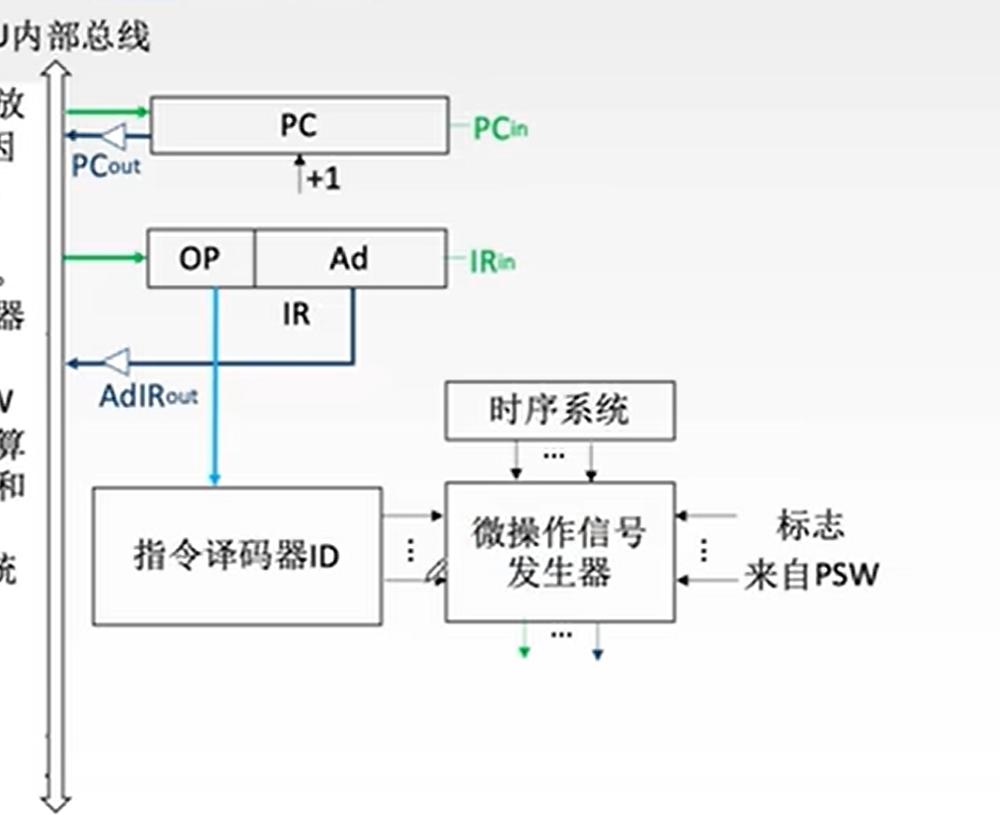
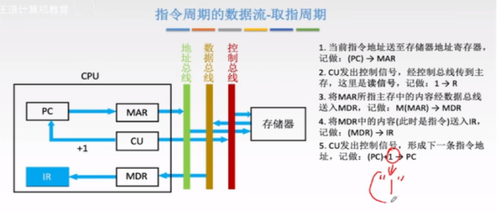

计算机组成原理
数值计算
- 计算单位转化
- GB 和 KB 之间还有 MB；
- b 与 B 的转换
- 进制转化
- 十转二
- 二转十六
- 算术运算
- 逻辑运算
计算机码
-
原码
- 符号位：符号位为 0 表示正数，符号位为 1 表示负数
- 数值位
- 缺点：运算不方便
-
反码
- 数值位取反
-
补码
- 正数的补码与其原码相同
- 负数数值位取反加 1
- 运算：符号位和数值位同等处理之后%2
-
移码
- 表示阶码（用于表示浮点数）
- 浮点数：


N 是浮点数，M 是尾数定精度（原码），R 是基数（2），E 是阶数（移码）
-
尾数规格化：正数尾数的第一个数值位必须是 1
-
左规：尾数左移变大，阶码-1
-
右规：尾数右移变小，阶码+1
-
-
IEEE 754 浮点数：偏移量 127（即 E+127）

-
定点数：小数点的位置固定不变
- 转十进制：
- 表示范围：补码的负数范围比反码和原码多 1
-
校验码
-
奇偶校验
- 奇校验：'1'的个数（数据位和校验位一共）保持奇数
- 偶校验：'1'的个数（数据位和校验位一共）保持偶数
-
海明码 - 校验位：1 2 4 8 ……（位） - 校验位数量 k
-
例子
- 信息位：
- 校验位数量：,
- 计算校验位：
位置 0001 0010 0011 0100 0101 0110 0111 1000 1001 1010 1011 1100 数据 P_1 异或 xxx1 的位置的数据为 0。
P_2 异或 xx1x 的位置的数据为 0。
利用奇偶性：保证数据块的 1 保持奇数个
-
8~11 位数据，4 位校验。
-
-
循环冗余校验
- 数据位+校验位
- 校验位：
- 除数：双方约定 k 位除数
- 校验位=数据位拼接上 k-1 个 0/除数 mod2
-
CPU
-
运算器
- （算术逻辑运算单元）ALU
- 累加寄存器 ACC:传送和暂存用户数据，为 ALU 运算提供工作区
- 数据缓冲寄存器 DR
- 状态条件寄存器 PSW：溢出、符号、中断
- 通用寄存器：R0~R3
-
控制器
- 指令寄存器 IR
- 程序计数器 PC：当前指令地址+1
- 地址寄存器 MAR：当前访问的内存地址
- 指令译码器 ID
- 数据寄存器 MDR
- 执行指令
- 取指：PC->MAR->IR->PC++
- 译码：IR->ID
- 取操作数：MDR->ALU 
- 执行指令
-
寄存器
- 专用
- 通用
-
内部总线
- 并行总线：p（parallel）
- 串行总线：s
- 数据总线宽度：是指CPU 与内存或 I/O 设备之间传输数据时所使用的数据通路的位数。它决定了 CPU 一次能够读取或写入的数据量。
- 总线分类
- IEEE-488：p
- IEEE-1394：so
- USB:s
- SCSI:PO
- RS-232C:SO
- ISA:16bit
- EISA:32bit
指令系统
-
指令
-
位数：指令字长
-
寻址方式：通过地址码找到数据的方式
- 立即寻址：地址码中存放数据，不放地址
- 直接寻址：
-
指令执行：
-
机器周期：包含若干个时钟周期
-
时钟周期：主频 3.0GHz,每秒钟由 3G 个时钟周期（节拍）
-
指令周期：取指周期+执行周期
-
取指周期：从主存中取指令需要的时间。PC+1->对指令译码

-
执行周期：执行指令（从主存中取数据，寻址时间）
-
中断周期：
-
-
-
-
流水模型
- 周期：指令集流水线的周期是指在执行一条指令的完整过程中，从当前指令的启动到下一条指令的启动之间所需的时间。——最长步骤
- 影响因素
- 结构：互斥
- 数据
- 控制
- 执行指令时间
-
区分指令和数据
- 取指周期——指令
- 执行收起——数据
存储器
- CPU 内部
- 通用寄存器
- Cache（SRAM）
- 映射方法（硬件完成）
- 直接映像
- 全相联映像
- 组相联映像
- 替换算法
- FIFO
- LRU
- 先验优化替换
- 性能
- 加权平均访问时间
- 映射方法（硬件完成）
- CPU 外部
- 主存（内存、DRAM）
- 虚拟存储：外（辅）存分页、分段调入内存
- 存储容量：存储单元个数*存储字长
- 存储字长：数据总线根数
- 存储单元个数：末地址-首地址+1
- 主存（内存、DRAM）
- 主板外部（外存）
- 磁盘
- 相联存储器
- 读取方式
- 只读 ROM
- 读写 RAM
IO
- 程序查询方式：CPU 全程控制
- 程序中断方式：外设发出中断请求后，程序在才会控制 CPU 读取数据
- 关中断：不执行任何中断检查，PSW-IF=1 开中断
- 中断请求中断：检查谁发送的中断请求。
- 直接存储器存取：
- DMA：允许外部设备（如硬盘驱动器、网络适配器等）直接访问计算机的内存而无需经过 CPU 的介入，与 cpu 竞争数据总线
- 接口
- DMA VS 中断
- 速度：DMA 方式通过硬件直接实现内存与外设之间的数据交换，无需 CPU 的参与。这种方式省去了 CPU 取指令、取数、送数等操作，因此传输速度较快。效率：DMA 方式允许 CPU 在数据传输过程中继续执行其他任务，从而提高了 CPU 的利用效率。优先级：DMA 的优先级通常比程序中断高，可以确保关键数据的高速传输。
可靠性
- 可用性：
- 串联=
- 并联
知识产权
- 软件著作：
- 永久保护：修改、署名
- 普通著作：
- 永久保护：修改、署名、完整
- 其他著作
- 作者终身及其死后 50 年
- 专利权
- 发明专利权的期限为二十年，实用新型专利权和外观设计专利权的期限为十年，均自申请日起计算
- 商标权
- 商标权的保护期限为10 年，超过 10 年申请的商标就过期无效，需要继续使用可以延长